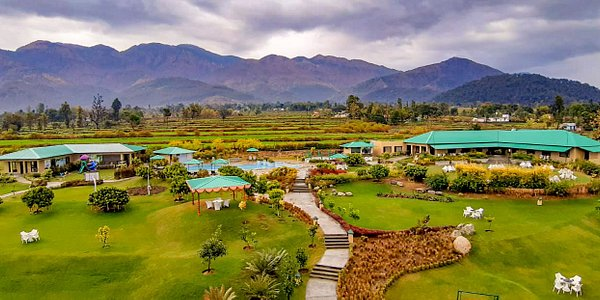
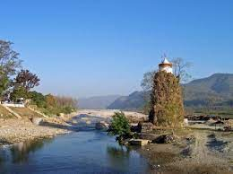

Ramnagar
Ramnagar is basically a small town in the Kumaon region in Nanital district (Uttarakhand).it is the main entrance gate of the’ Jim Corbett National park’, And Ramnagar is the city that controls all the administrative activities of Jim Corbett National park and the famous ‘Tiger Project’. This city is the closest to the famous hill station Nainital as well as the entry gate for the national parks. it is located 65 km away from Nainital. It holds a population of around 1 lakh people.
Main highlights of Ramnagar (Uttarakhand):
Longitude and latitude: 40°N 79.12°E
Weather: sunny, cloudy, windy, and rainy
Sea level:345 m (1132 feet)
Main food: Bal mithai, Gadheri ki sabji , Guahat ki dal, Ras Bhat, Jholi bhat
Main fruits: Peach (aadoo ),citrus (malta) ,pulm (pulam)
Nearby places to visit: Maa Sitabani Temple, Bhimtal lake, Nanital lake, Ranikhet and Almora, Garjiya Devi temple
Places to shop:
How to reach: by bus, car, two-wheeler, By Train

How to reach Ramnagar :
By air :
Pantnagar airport, about 81 km away from Ramnagar towards the south, is the nearest airport through which you are easily reachable or connected to big cities like Delhi. From here you can hire a local guide or local taxi driver for reaching Ramnagar, or you can hire a cab online too.
By road :
State buses and private buses or a local taxi which will connect you to Nanital, Kasauni to Mukteshwar, and the other option are your personal vehicle whether it’s a car or two-wheeler you can have access towards Nanital and Ramnagar.

By train :
Ramnagar railway station is well connected to Kashipur railway station which further connects with Moradabad and major cities like Delhi, Dehradun, and Lucknow. It is easy to reach over there by train. You can hire a taxi from Kashipur or can have a little ride on a local bus for reaching Ramnagar.